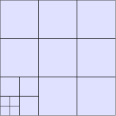
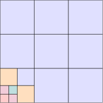

Hierarchical splines
A tensor-product spline space cannot be refined locally: a knot inserted anywhere is inserted across the whole patch, so resolving a corner singularity costs elements along two whole lines. Hierarchical splines break that coupling — a coarse tensor basis is the first level, and finer levels are added only where they are needed.
FerriteGismo supports both flavours G+Smo provides, through TinyGismo.jl:
| Partition of unity after refinement | ||
|---|---|---|
THBSplineBasis / THBSpline | yes | truncated, the usual choice |
HBSplineBasis / HBSpline | no | untruncated |
Everything here applies to both; they differ only under Truncation.
Building a locally refined patch
Start from an ordinary tensor patch and lift it. The lift changes nothing geometrically — it only makes the patch refinable element by element:
using FerriteGismogeometry = createBSplineSquare(1.0)degreeElevate!(geometry) # quadraticuniformRefine!(geometry, 2) # 3x3 coarse elementspatch = THBSpline{2}(geometry)numLevels(TinyGismo.basis(patch))1Refinement is addressed with a TinyGismo's RefinementBox, which names the level a region is refined to and indexes its corners on that level's grid. Each level halves the cells of the one before it, so the first coarse cell is cells 1:2 on level 2:
refineElements!(patch, RefinementBox(2, 1:2, 1:2)) # coarse cell (1,1) -> level 2refineElements!(patch, RefinementBox(3, 1:2, 1:2)) # its own first quarter -> level 3numLevels(TinyGismo.basis(patch))3The grid is built exactly as for a tensor patch:
grid = IGAGrid{2}(patch)getncells(grid), isHierarchical(grid)(15, true)getLevelAtPoint confirms where the refinement landed:
[getLevelAtPoint(TinyGismo.basis(patch), p) for p in ([0.05, 0.05], [0.2, 0.2], [0.8, 0.8])]3-element Vector{Int32}:
3
2
1Drawing parameterSpaceGrid shows the graded mesh. On a hierarchical grid this mesh is built element by element, so it is the real element layout and not a lattice over it:
using FerriteTikztikzgrid(parameterSpaceGrid(grid); cellcolor = "blue!12", picturescale = 6.0)
Three levels are visible in the lower-left corner, and the rest of the patch is untouched.
Why one interpolation is not enough
On a tensor patch every element sees the same $(p+1)^{d}$ basis functions, which is what lets one IGAInterpolation describe the whole patch: getnbasefunctions is a single number per interpolation and it sizes every CellValues buffer.
A hierarchical patch breaks that — an element at a level transition sees the fine functions on it and the coarse functions overlapping it:
sort(unique(length(cell.nodes) for cell in grid.cells))5-element Vector{Int64}:
9
10
12
13
15So IGAInterpolation refuses a hierarchical basis rather than silently picking one of these counts:
try IGAInterpolation{RefQuadrilateral}(TinyGismo.basis(patch))catch e println(e.msg)enda hierarchical basis has a different number of active functions per element, so one interpolation cannot describe the whole patch. Use `hierarchicalSubdomains(grid)` for one interpolation per group of elements, each with its own SubDofHandler.Grouping elements into subdomains
Ferrite already has a mechanism for different interpolations on different cells: a SubDofHandler per group. hierarchicalSubdomains partitions the cells by active count and returns one interpolation per group:
groups = hierarchicalSubdomains(grid)[(getnbasefunctions(ip), length(cells)) for (cells, ip) in groups]5-element Vector{Tuple{Int64, Int64}}:
(9, 9)
(10, 2)
(12, 1)
(13, 2)
(15, 1)Colouring the mesh by group shows what the partition means geometrically: each level's interior is uniform, and the extra functions live in a band along the level transitions.
mesh = parameterSpaceGrid(grid)for (i, (cells, _)) in enumerate(groups) addcellset!(mesh, "group$i", Set(cells))endpalette = ["blue!12", "orange!25", "teal!25", "purple!20", "red!20", "green!20"]tikzgrid( mesh; cellsetcolors = ["group$i" => palette[mod1(i, length(palette))] for i in eachindex(groups)], picturescale = 6.0,)
Each group gets its own SubDofHandler:
dh = IGADofHandler(grid)for (cells, ip) in groups sdh = SubDofHandler(dh, cells) add!(sdh, :u, ip)endclose!(dh)ndofs(dh), Int(size(TinyGismo.basis(patch)))(31, 31)The dof count equals the number of control points. That is the important property: the subdomains partition the elements, not the basis, so a control point active in two groups is the same dof in both and nothing about the grouping leaks into the linear system.
Assembling
The assembly loop gains exactly one level of nesting: iterate dh.subdofhandlers, and build a CellValues per subdomain, since each has its own number of shape functions.
for sdh in dh.subdofhandlers ip = only(sdh.field_interpolations) cellvalues = CellValues(qr, ip, ip^2) n = getnbasefunctions(ip) # ... element matrices of size n, assembled with celldofs(cell) as usual for cell in CellIterator(sdh) reinit!(cellvalues, cell) # ... endendA tensor patch has a single subdomain, so the same code covers both. The Locally refined heat equation tutorial works this through end to end.
Boundary conditions need no special handling: constraints are expressed on control points, which belong to the patch rather than to any subdomain, so fixEdge! and prescribeEdge! behave as on a tensor patch.
Visualization
exportGrid and evaluateAtExportNodes work unchanged, and on a hierarchical grid they too are built element by element:
getncells(exportGrid(grid)), getncells(grid)(15, 15)Each element carries its own corners, so nodes are duplicated along element boundaries. That is harmless for drawing and for pointwise field values, and is what lets the graded mesh be drawn exactly. subdivision samples each element several times per direction, for a curved geometry or a high-order field:
getncells(exportGrid(grid; subdivision = 3))135Two functions are not available, because they presuppose a tensor-product element lattice that a hierarchical patch does not have. Both raise rather than answer wrongly:
breakpoints(grid, dir)— there is no single set of breakpoints per direction.numElementsPerDirection(grid, dir)— the elements do not form a grid. Usegetncells(grid)for the total.
Truncation
THBSplineBasis truncates the coarse functions against the finer levels; HBSplineBasis does not. Both span the same space and give the same number of dofs, but only the truncated one remains a partition of unity over refined regions:
pou(patch, ξ) = sum(toMatrix(_eval(TinyGismo.basis(patch), ξ)))truncated = THBSpline{2}(geometry)untruncated = HBSpline{2}(geometry)refineElements!(truncated, RefinementBox(2, 1:2, 1:2))refineElements!(untruncated, RefinementBox(2, 1:2, 1:2))inside = [0.05, 0.05] # inside the refined regionpou(truncated, inside), pou(untruncated, inside)(1.0, 1.39001875)Partition of unity is what makes the coefficients behave like control points and keeps the system well-conditioned, so THBSpline is the default choice. HBSpline goes through the identical pipeline if you want the untruncated functions.
refineElements! refines exactly the elements it is given, without bounding how many levels may meet at one element — a condition analysis-suitability results rely on. G+Smo's gsHBox machinery is not wrapped by TinyGismo yet, so grade the refinement yourself: refine each level over a region contained in the previous one, as done above.